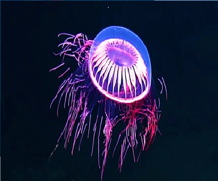

СЕМЕЙСТВА Halicreatidae
ГЛУБИНА:ГЛУБИНА: на уровне около 1200–1500 метров (иногда до 2000 м)
КОГДА ОТКРЫЛИ: в начале XX века
ТИП ПИТАНИЯ:глубоководный плотоядный организм, питающийся планктоном, мелкими ракообразными и икрой рыб,
Среда обитания: Встречается в мезопелагической зоне (океанские глубины), в частности, замечена у архипелага Ревильягигедо (Мексика).
Движение: Медуза практически незаметна и передвигается очень медленно, используя пульсацию купола для перемещения, что характерно для глубоководных видов, экономящих энергию.
Освещение (Псевдобиолюминесценция): Эффект фейерверка (яркие пурпурные, оранжевые и желтые цвета) — это результат прохождения света от исследовательского аппарата через структуру тела медузы, а именно через радиальные каналы, питающие щупальца.
Внешний вид: Тело покрыто желатинообразной массой, а радиальные каналы образуют узор, напоминающий салют, когда на них падает свет.

наверх